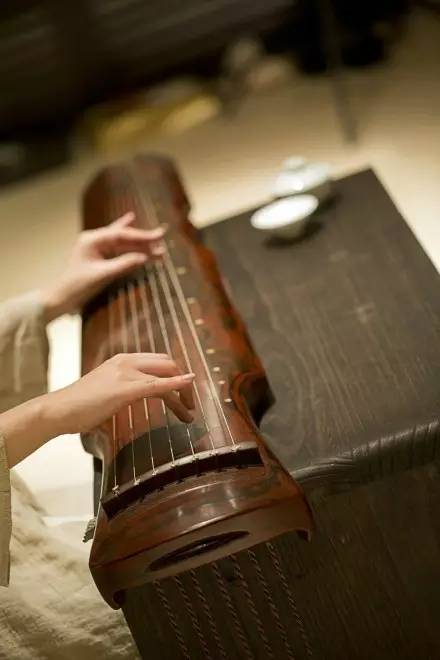

中国古代十大名曲和背后的历史典故
 2,784
2,784
中华古韵，向有十大名曲一说。由汉族传统乐器演奏，声音优雅，尽现中国韵味之美，是汉族传统音乐的精髓。
这些乐曲以历史典故为旁衬，借古人之旧事以壮声势。大多数人并非行家，虽偶尔聆听古曲，觉得好听，却不知其深刻内涵。
1、广陵散
此曲是一首曲调较为激昂的古琴曲，又名《广陵止息》，传说原是流行于广陵地区的民间乐曲，现仅存古琴曲。最早出现在东汉蔡邕的《琴操》里：聂政，战国时期韩国人，其父为韩王铸剑误期而被杀。为报父仇，刻苦学琴十年后，改变音容，返回韩国，在离宫不远处弹琴，高超的琴艺使行人止步，牛马停蹄。韩王得悉后，召进宫内演奏，聂政从琴腹抽出匕首刺死韩王。
聂政时代大约六百多年后，西晋一位才智超绝的人物，使《广陵散》成为千古绝响。此人就是“竹林七贤”中最有影响力的嵇康。因而古曲《广陵散》的背后，实际上包含了聂政和嵇康的两个典故。

2、《高山流水》
春秋战国时代的《列子·汤问》中记载，伯牙善鼓琴，钟子期善听。钟子期竟能领会这是描绘“巍巍乎志在高山”和“洋洋乎志在流水”。伯牙惊道：“善哉，子之心与吾心同。”于是二人成为人生知己。后来在《吕氏春秋》中还记载着：钟子期死，伯牙摔琴绝弦，终身不复鼓琴，故有高山流水之曲。
3、十面埋伏
公元前202前，楚汉会战于垓下，后人根据这场战争作了有名的琵琶大套武曲《十面埋伏》。《十面埋伏》可以说是把古代琵琶表演艺术发挥到登峰造极的地步，创造了单个乐器的独奏形式表现波澜壮阔的史诗场面，直到今天《十面埋伏》依然是琵琶演奏艺术领域最具代表性的汉族传统名作。
4、平沙落雁
此曲描写了雁群降落前在空中盘旋顾盼的情景。据说明朝饱受内忧外患困扰，天下有识之士无不忧心忡忡，此曲“借鸿鸪之远志，写逸士之心胸也”，以示儒家倡导的“贫则独善其身，达则兼济天下”的思想。从此来看，此曲曲中之音和曲外之意，包涵了对怀才不遇而欲取功名者的励志，和对因言获罪而退隐山林者的慰藉。
5、夕阳箫鼓
著名的琵琶传统大套文曲，有人认为此曲的立意，来自于白居易的《琵琶行》——“浔阳江头夜送客，枫叶荻花秋瑟瑟”。事实上历史上更多人认为它的音乐意境，来自张若虚的《春江花月夜》一诗。此曲所描述的那种画韵诗境尽现于眼前，使人有如梦回唐朝，进而无限感怀大唐盛世之万千气象。
6、汉宫秋月
秋风习习，月亮高挂，宫墙内多少眼泪，无尽的等待和期盼，只落的满头百发。据载，《汉宫秋月》意在表现古代受压迫宫女的幽怨悲泣情绪，唤起人们对她们不幸人生遭遇的同情。
7、梅花三弄
梅花，志高洁，历来是文人墨客咏叹的对象。“三弄”是指同一段曲调反复演奏三次。乐曲通过歌颂梅花不畏寒霜的顽强性格，来赞誉具有高尚情操之人。它的典故是东晋大将桓伊为狂士王徽之演奏的故事。
王徽之应召赴东晋的都城建康，所乘的船停泊在码头。恰巧桓伊在岸上，两人并不相识。王徽之便命人对桓伊说：“闻君善吹笛，试为我一奏。”桓伊此时已是高官，却出笛吹三弄梅花之调，高妙绝伦。二人相会虽不交一语，却是难得的机缘。正是这不期相遇，才导致了千古佳作《梅花三弄》的诞生。
8、渔樵问答
《三国演义》开篇词中“白发渔樵江渚上，惯看秋月春风，一壶浊酒喜相逢，古今多少事，都付笑谈中。”可做古曲《渔樵问答》的妙解。
渔樵耕读是农耕社会的四业，代表了我国民间的基本生活方式。这四业一定程度上反映了古代不同价值取向。如果说耕读面对的是现实，蕴涵入世向俗的道理，那么渔樵的深层意象是出世问玄，充满了超脱的意味。乐曲通过渔樵在青山绿水间自得其乐的情趣，表达对追名逐利的鄙弃，反映的是一种隐逸之士对渔樵生活的向往，希望摆脱俗尘凡事的羁绊。尘世间万般滞重，在《渔樵问答》飘逸潇洒的旋律中烟消云散。此境界令人叹服。

9、胡笳十八拍
汉末，著名文学家、古琴家蔡邕的女儿蔡琰（文姬）,在兵乱中被匈奴所获，留居南匈奴与左贤王为妃，生了两个孩子。后来曹操派人把她接回，她写了一首长诗，叙唱她悲苦的身世和思乡别子的情怀。情绪悲凉激动，感人颇深。十八拍即十八首之意。又因该诗是她有感于胡笳的哀声而作，所以名为《胡笳十八拍》或《胡笳鸣》。
10、阳春白雪
阳春白雪的典故来自《楚辞》中的《宋玉答楚王问》一文。楚襄王问宋玉，先生有什么隐藏的德行么？为何士民众庶不怎么称誉你啊？宋玉说，有歌者客于楚国郢中，起初吟唱“下里巴人”，国中和者有数千人。当歌者唱“阳春白雪”时，国中和者不过数十人。宋玉的结论是：下里巴人是一种民间歌曲，“阳春白雪”是当时楚国一种高级歌曲，能唱和的人自然很少。那些平凡的人，怎能了解我们的作为呢？
来源：古典书城